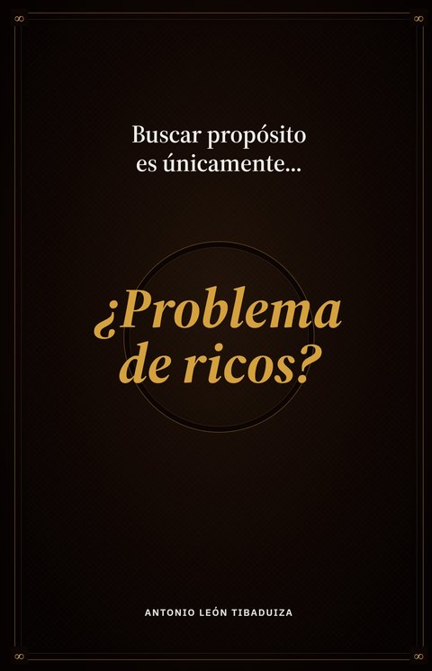

Edición en español
Te presentamos un libro sobre: qué es vivir con propósito, por qué es importante sostenerlo y cómo se ve en la práctica. Con la ciencia detrás.
Conseguir el libroFísico en Colombia · físico por Amazon · digital (Kindle)

Antes de seguir
Si alguna te hizo pausar, no es un defecto tuyo.
Por qué nos pasa
El avance de las últimas décadas rompió el vínculo entre las fuentes históricas del sentido y lo que hoy sabemos que es cierto. Eso nos dejó a la deriva dentro de un sistema que solo exige producir.
Frente a ese vacío, las respuestas se multiplicaron en refugios estériles: la fe convertida en mercancía, el consumo masivo de autoayuda superficial, o el escepticismo que reduce todo a un debate abstracto y lejano.
Ninguno de los tres responde la pregunta. Solo la aplaza.
Qué encontrarás dentro
Qué es realmente, de qué está hecho y por qué no se encuentra: se construye.
Qué te empuja de verdad cuando crees que estás decidiendo tú.
Métodos basados en evidencia, no en frases motivacionales.
La franja donde todavía decides, y cómo dejar de gastarla por defecto.
Elige tu edición
Quién escribe
Ingeniero. Muchos años en sector productivo, corporativo, social y educativo.
Durante años cargué con preguntas que no me dejaban tranquilo. Este libro reúne lo que encontré buscando respuestas, ordenado para que no tengas que empezar desde cero.
Buscar propósito es únicamente…
Definitivamente no.
Pero ignorarlo es un lujo que no te puedes dar.